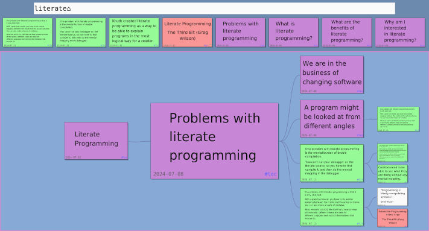

Published on 1 August 2024.
July means vacation. Vacation means more time for recreational activities and working on things I enjoy.
For the recreational part, I’ve spend a lot of time away from the computer. One thing I’ve been doing quite a lot more is running. Here I am participating in a trail race:
For the working on things I enjoy part, I’ve done some development on my note taking application and practiced taking better notes. I also managed to finish up an old blog post.
In 2020 I read the book How to Take Smart Notes by Sönke Ahrens. It describes a specific way to take notes with the intent to turn those notes into new texts. I wanted a program that closely mimicked this method but couldn’t find one. So I set out to create my own. You can see a demo of it in this video that I made in 2021:
This month my interest for smart notes resurfaced. I use the program regularly, but I find that I mostly collect notes, and don’t do much with them. I read more about the approach in the book and in articles I found online. And in my own notes. I made some small improvements to my program to better support the smart notes workflow. I made text rendering more pretty and added the ability to color notes differently depending on the kind of note.
Then I thought I should practice actually producing some text from my notes. One area of interest to me is literate programming. I started collecting notes on the topic, organizing them in my program, reading more articles about literate programming, and taking more notes. Here is a current snapshot:

I though I would write a blog post about literate programming. So I started to build a table of contents out of my different notes. But when I did that, I found that I couldn’t piece together a narrative. But I did find another possible narrative that includes topics from literate programming.
I hope this process will eventually generate a few blog posts as output.
One idea that came from the literate programming research is what I call one-file programs. I asked myself what makes programs easier to read and understand. I though of these characteristics:
Small: Fits in a single file
Standalone: With as few dependencies as possible
Custom for me: fork and make changes for yourself
I’m currently experimenting with writing such programs, and you can find the repo here: one-file-programs repo.
This style of programming is also inspired by freewheeling apps that I wrote about in the June newsletter.
I also finished the blog post about Output Tracking vs Mocks. I started writing it many months ago, and then my motivation dropped, so I’m glad I managed to finish it.
As most of the times, writing about the topic helped me clarify my thinking about it and I learned something new. That’s the main reason that I write.
I also got some feedback on Discord.
I re-watched parts of Inventing on Principle by Bret Victor.
I was reminded that creators need to be able to see what they are doing without any mental mapping.
That is why one problem with literate programming is the mental burden of double compilation. You can’t run your debugger on the literate source, so you have to first compile it, and then do the mental mapping in the debugger.
This mental burden of course exists for regular programs as well. You have to imagine what the source code instructions would do.
A live system, like Smalltalk, is better in this regard. I want to explore more how to incorporate liveness in programming.
What is Rickard working on and thinking about right now?
Every month I write a newsletter about just that. You will get updates about my current projects and thoughts about programming, and also get a chance to hit reply and interact with me. Subscribe to it below.